Off-axis Projection
Start with the runnable walk-through — Projection basics — then come back here for the reference details. The notebook series is: basics → LOS cubes & kinematics → validation → advanced features.
Mera can project hydro, RT, gravity and particle data along any line of sight, not just the coordinate axes :x / :y / :z. The same projection function is used — you simply specify the viewing direction. The axis-aligned path is unchanged when no off-axis option is given.
Off-axis maps can also be dropped straight into a composable First-Look Report (e.g. ProjectionCard(:hydro, :sd; direction=:edgeon)) alongside phases, profiles and scalars.
An off-axis projection is an orthographic (parallel) projection: the observer is effectively at infinity, so all lines of sight are parallel. Each cell is carried along the line of sight onto the image plane and accumulated there. The viewing direction is free — it need not align with a box axis — which is what makes it off-axis.
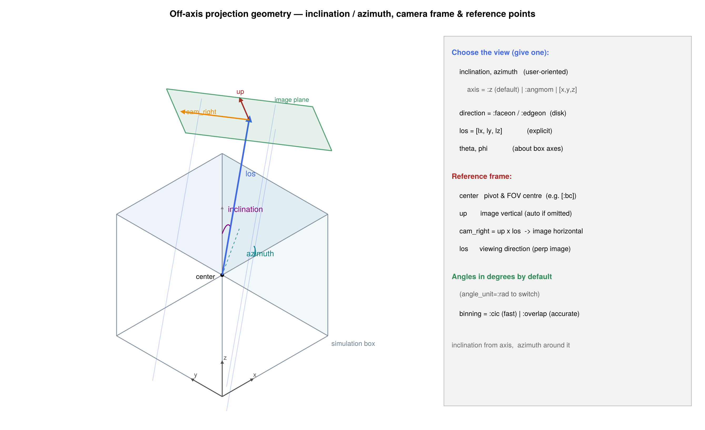
Specifying the view
The everyday way to choose a view is inclination and azimuth — exactly how you would describe tilting an object in front of a camera. All angles are in degrees by default (angle_unit=:rad to switch).
using Mera
gas = gethydro(getinfo(100, "spiral_clumps"))
# tilt the view 60° away from "looking straight down", rotated by 30°
m = projection(gas, :sd, :Msol_pc2; inclination=60, azimuth=30, center=[:bc], range_unit=:kpc)inclination— tilt away from the reference axis:0°looks straight down the axis,90°looks perpendicular to it.azimuth— rotate the viewing direction around the reference axis. (Not to be confused withposition_angle, which rolls the image about the line of sight — see below.)axis— the reference axis the angles are measured from. Default:z(the box vertical), so no disk is assumed — this works for clouds, filaments, the cosmic web, anything. For a rotating disk setaxis=:angmomto measure inclination from the object's own spin axis L (theninclination=0is face-on and90°is edge-on), or give any vector, e.g.axis=[1,0,1].
# galaxy inclined 60° from face-on, measured from its own spin axis
projection(gas, :sd, :Msol_pc2; inclination=60, axis=:angmom, center=[:bc], range_unit=:kpc)
# a cloud / cosmic-web region tilted 35° from the box vertical (default axis=:z)
projection(gas, :sd, :Msol_pc2; inclination=35, azimuth=90, center=[:bc], range_unit=:kpc)inclination/azimuth are angles relative to the reference axis — so their meaning depends on that reference, which you choose:
axis=:z(default) is the box vertical, an arbitrary direction relative to the object.inclinationis then the tilt from the box vertical — it equals a galaxy's true inclination only if its disk happens to be aligned withz. This default assumes nothing about the contents, so it is the right choice for clouds, filaments or the cosmic web, where there is no preferred plane.axis=:angmom(and the shortcutsdirection=:faceon/:edgeon) measure from the object's own angular momentumL, computed from the data. The view then follows the disk however it is tilted in the box — it is not tied to the box axes. This is only a meaningful "disk normal" for a rotating disk.
L is computed about center, so center on the object (its centre of mass): only then does L reduce to the true spin (the bulk-motion contribution (Σ m·r)×v_bulk cancels). Off-centre, L — and hence "face-on" — is contaminated by the object's orbital motion.
Other ways to set the view
All of these remain available — pick whichever fits:
Give exactly one line-of-sight specifier — combining two (e.g. los and inclination) raises an error rather than silently picking one, so a wrong figure can't slip through.
| Option | Meaning |
|---|---|
inclination, azimuth, axis | tilt from a reference axis (recommended; see above) |
direction = :faceon | look along the gas/particle spin L (disk face-on) |
direction = :edgeon | look perpendicular to L, camera up along L (disk edge-on) |
los = [lx, ly, lz] | explicit line-of-sight vector (need not be normalized) |
theta, phi | spherical angles about the box axes, los = [sinθcosφ, sinθsinφ, cosθ] |
Two modifiers combine with any of the above:
| Modifier | Meaning |
|---|---|
position_angle | image roll about the line of sight (the on-sky position angle / camera roll) — leaves the line of sight unchanged, rotates the image |
up = [ux, uy, uz] | explicit camera up-vector (in-plane orientation); by default chosen automatically (reference axis kept pointing up) |
How the camera basis is built (the math)
Whatever way you specify the view, Mera reduces it to a single unit line-of-sight vector ŵ and then builds a right-handed orthonormal camera basis (r̂, û, ŵ): image x (r̂, stored as cam_right), image y (û, stored as up), and the viewing direction (ŵ, stored as los). The construction is deterministic, so the same view always produces the same image orientation:
Line of sight.
ŵ = los / ‖los‖, whereloscomes from the explicit vector, thetheta/phiform[sinθ cosφ, sinθ sinφ, cosθ], or the inclination/azimuth tilt of the reference axis.Up-vector. An explicit
upis used as-is (unless it is (anti)parallel toŵ). Otherwise Mera picks the world axis least parallel toŵ(ties broken inx < y < zorder) and Gram–Schmidt-orthogonalises it againstŵ:\[\hat{u}_0 = \frac{\hat{a} - (\hat{a}\cdot\hat{w})\,\hat{w}} {\lVert\,\hat{a} - (\hat{a}\cdot\hat{w})\,\hat{w}\,\rVert}.\]
This is always perpendicular to
ŵand fully reproducible (no random tie-break).Right and up.
\[\hat{r} = \frac{\hat{u}_0 \times \hat{w}}{\lVert \hat{u}_0 \times \hat{w}\rVert}, \qquad \hat{u} = \hat{w} \times \hat{r},\]
so the frame is right-handed with
r̂ × û = ŵ.Image roll.
position_angle(the camera roll) rotates(r̂, û)together aboutŵ— it changes the on-sky image orientation, not the line of sight:\[\hat{r}' = \cos\rho\,\hat{r} + \sin\rho\,\hat{u}, \qquad \hat{u}' = -\sin\rho\,\hat{r} + \cos\rho\,\hat{u}.\]
A vector v (e.g. a velocity) decomposes onto this frame by projection: its line-of-sight component is v·ŵ (this is :vlos), and its image-plane components are v·r̂ and v·û. A position p maps the same way,
\[p \;\longmapsto\; \big((p-c)\cdot\hat{r},\; (p-c)\cdot\hat{u},\; (p-c)\cdot\hat{w}\big) \;=\; R\,(p-c), \qquad R = [\,\hat{r}\;\hat{u}\;\hat{w}\,]^{\mathsf{T}},\]
where c fixes the image origin (the projection centre); the third component (p-c)·ŵ is the line-of-sight depth used for slab selection. As a convention check, los=[0,0,1] with up=[0,1,0] gives r̂=[1,0,0], û=[0,1,0] — the off-axis path then reduces exactly to the axis-aligned direction=:z mapping (image x → simulation x, image y → simulation y). The basis travels on the result as m.cam_right, m.up, m.los (see Camera metadata on the result below).
direction=:faceon/:edgeon are the quick disk shortcuts (= inclination 0°/90° with axis=:angmom); they take no axis of their own. Pixel size: prefer pxsize=[size, :unit] (a physical pixel size, e.g. pxsize=[50, :pc] or pxsize=[0.3, :kpc]) so resolution means the same thing regardless of field of view; res (a raw pixel count) also works. This applies to projection, los_cube/velocity_cube, los_component and rotation_sequence alike.
fo = projection(gas, :sd, :Msol_pc2, direction=:faceon, center=[:bc], range_unit=:kpc) # disk face-on
eo = projection(gas, :sd, :Msol_pc2, direction=:edgeon, center=[:bc], range_unit=:kpc) # disk edge-on
ex = projection(gas, :sd, :Msol_pc2, los=[1, 1, 1], center=[:bc], range_unit=:kpc) # explicit vector
pa = projection(gas, :sd, :Msol_pc2, inclination=60, position_angle=30, center=[:bc]) # tilt + roll the imageThese use the gas/particle angular momentum L, which is computed about center. They are only correct if center is the object's centre (its centre of mass) — only then does L reduce to the true spin (the bulk-motion term cancels). The center=[:bc] (box centre) used in these examples is right only when the object sits at the box centre; otherwise pass the object's coordinates. See the note above on what the inclination is measured against.
Gallery: inclination & azimuth
One galaxy (spiral_clumps), surface density :sd with the accurate binning=:overlap, oriented entirely through inclination/azimuth measured from the disk's own spin axis (axis=:angmom). Every panel uses the same square field of view and pixel count, so they are directly comparable — only the camera changes, the data do not.
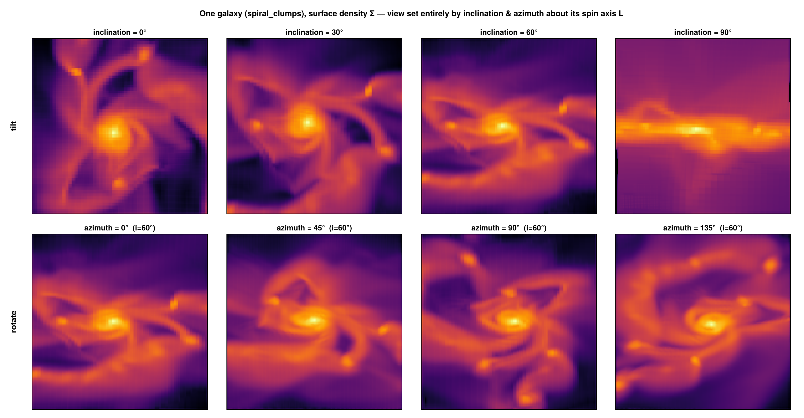
Top row — inclination only. Tilt from i = 0° (face-on) to 90° (edge-on) — the clumpy spiral flattens into a thin disk:
gas = gethydro(getinfo(100, "spiral_clumps"))
for i in (0, 30, 60, 90)
p = projection(gas, :sd, :Msol_pc2; inclination=i, azimuth=0, axis=:angmom, binning=:overlap,
center=[:bc], xrange=[-22,22], yrange=[-22,22], range_unit=:kpc, pxsize=[0.3, :kpc])
endBottom row — azimuth at fixed i = 60°. Spin the same tilted disk around its axis (azimuth = 0°, 45°, 90°, 135°):
for az in (0, 45, 90, 135)
p = projection(gas, :sd, :Msol_pc2; inclination=60, azimuth=az, axis=:angmom,
binning=:overlap, center=[:bc], xrange=[-22,22], yrange=[-22,22], range_unit=:kpc, pxsize=[0.3, :kpc])
endBinning modes: fast preview vs. accurate
The rotated cells are deposited onto the camera-plane pixel grid with one of four schemes (keyword binning). :cic/:ngp are the standard nearest-grid-point / cloud-in-cell particle-mesh assignment (Hockney & Eastwood 1988); :overlap/:exact are footprint methods:
binning | speed | description |
|---|---|---|
:overlap (default) | accurate, parallel | per-cell footprint supersampling (ns = ceil(cellsize/pixel) sub-points/axis, capped at nmax=64): AMR-aligned, no moiré/holes, converges to :exact, usually faster than it. nmax tunes the quality/speed cap. |
:exact | exact, parallel | analytic box-spline footprint: integrates the line-of-sight column (chord length through the cube) over each pixel exactly — the reference for fidelity |
:cic | fast | bilinear deposit of each cell centre — smooth but speckles/moiré on coarse AMR cells; fast preview only |
:ngp | fastest | nearest-pixel deposit of each cell centre — sharp preview |
The default :overlap (and :exact) are AMR-aligned and free of the cell-grid moiré that point deposits (:cic/:ngp) leave on coarse cells; use :cic only for a quick preview.
How each AMR cell is treated
Each cell is an axis-aligned cube of side s = boxlen / 2^ℓ. The pipeline rotates the cube into the camera frame (r̂, û, ŵ) — build_camera_basis (src/functions/projection/projection.jl) — projects its centre to image coordinates x_cam = r̂·r, y_cam = û·r, then deposits its projected shadow onto the pixel grid. Because the camera basis is orthonormal the rotation preserves volume, which is the geometric root of the conservation property. The four binning kernels differ only in how the shadow is spread across pixels — and every one is a partition of unity (the per-cell shares sum to 1), so the projected total equals the cell total at any angle and any pixel size.
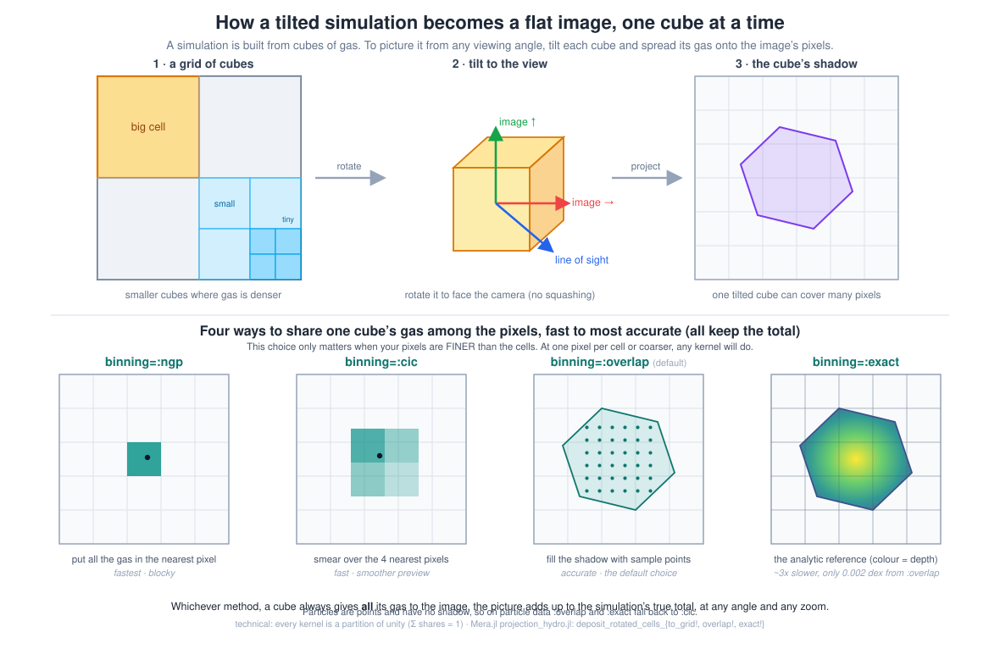
:ngp/:cictreat the cell as its centre point — one nearest pixel, or a 4-pixel bilinear stencil. Fast, but a coarse cell that should shadow many pixels collapses to a point (speckle/moiré).deposit_rotated_cells_to_grid!.:overlapsplits the cube inton³regularly-spaced sub-points (n = ⌈cellsize/pixel⌉, capped atnmax), each CIC-deposited carryingweight/n³. Asngrows it converges to the true cube shadow; a finest-level cell (n=1) reduces to plain CIC.deposit_rotated_cells_overlap!.:exactintegrates the exact line-of-sight chordL(x,y)over each pixel analytically (the box-spline footprintM_Ξ, coloured above byL): no sampling, nonmaxcap. The cube shadow is cut at its kink lines into convex pieces whereLis affine and integrated in closed form.deposit_rotated_cells_exact!(see the next subsection for the math).
# fast preview (point deposit — may speckle on coarse AMR cells)
preview = projection(gas, :sd, :Msol_pc2, los=[1, 1, 1], binning=:cic, center=[:bc])
# accurate, footprint-correct, parallelized over cells
final = projection(gas, :sd, :Msol_pc2, los=[1, 1, 1], binning=:overlap, center=[:bc])
# exact analytic footprint (highest fidelity)
exact = projection(gas, :sd, :Msol_pc2, los=[1, 1, 1], binning=:exact, center=[:bc]):overlap and :exact are thread-parallel; control the thread count with max_threads.
:exact — the analytic box-spline footprint
For an orthographic projection the line-of-sight column of a uniform cube is its X-ray transform: the integral, over each pixel, of the chord length L(x,y) the sightline cuts through the axis-aligned cube.
Why a box spline. Let the camera basis be (r, u, ŵ) (right, up, line of sight). A cube of side s has three edge vectors s·ê₁, s·ê₂, s·ê₃; their projections onto the image plane are the columns of the 2×3 matrix
Ξ = s · [ r·ê₁ r·ê₂ r·ê₃ ]
[ u·ê₁ u·ê₂ u·ê₃ ]The projected column density is the convolution of the three 1-D box functions along the columns ξ₁, ξ₂, ξ₃ of Ξ — i.e. the box spline M_Ξ (de Boor, Höllig & Riemenschneider 1993). Its support is the zonotope ξ₁ ⊕ ξ₂ ⊕ ξ₃ — a hexagon (the cube's shadow) — and it is piecewise-linear with ∫ M_Ξ = s³ (the cell volume), which is exactly why the deposit conserves mass. :exact integrates M_Ξ over each pixel analytically (cutting the hexagon at its kink lines into pieces where L is affine, then integrating each piece in closed form), so it is exact to machine precision, has no nmax cap, and reduces to the exact area-overlap binner when ŵ is a box axis (then two columns of Ξ are axis-aligned and the hexagon collapses to the cell's square). :overlap is a convergent n³ sampling of this same footprint; :exact is its limit. Cost is O(covered pixels) per cell.
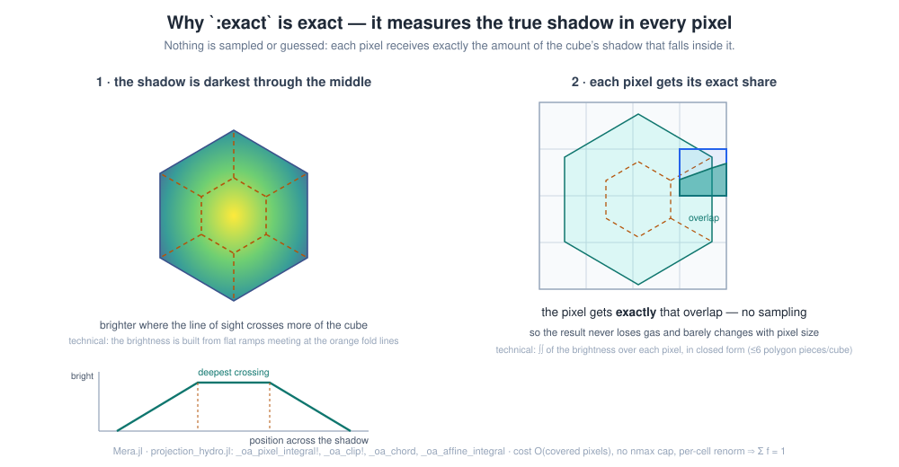
Concretely (_oa_pixel_integral!): the pixel∩footprint polygon is Sutherland–Hodgman-clipped (_oa_clip!) and split by the kink lines into convex pieces; on each, the entering face (argmax tmin) and exiting face (argmin tmax) are fixed, so L is affine and ∫∫ = area · L(centroid) (_oa_affine_integral) is exact — at most 6 splits for a cube, O(covered pixels) per cell, no nmax cap. A per-cell renormalisation makes the shares a partition of unity, so the total is conserved to machine precision.
References: de Boor, Höllig & Riemenschneider, Box Splines (Springer 1993); Westover, Footprint Evaluation for Volume Rendering (SIGGRAPH 1990). Among AMR tools an analytic off-axis cell footprint is, to our knowledge, uncommon — yt ray-casts and most others resample to a uniform grid; SPH codes (SPLASH) integrate analytic kernels for particles rather than cells.
How the methods differ — and why it is not visible in the conserved total
All three modes conserve the projected total to machine precision — that is a partition-of-unity property of the deposit (every cell distributes its full weight across pixels; Hockney & Eastwood 1988), proven in the Conservation page. Conservation is necessary but not sufficient: it says nothing about where the mass lands.
:cic/:ngp deposit each cell at its rotated centre. When the map out-resolves the data — i.e. a cell's projected shadow is larger than a pixel — a coarse cell illuminates only one pixel (:ngp) or a 2×2 stencil (:cic) and leaves the rest of its true footprint empty. :overlap/:exact fill the cell's rotated footprint instead. The figure below shows the same off-axis view of a uniform-grid galaxy at high resolution: :ngp is a sparse lattice of lit pixels, :cic is speckled, while :overlap and :exact are smooth and hole-free — yet all four sum to the identical total.
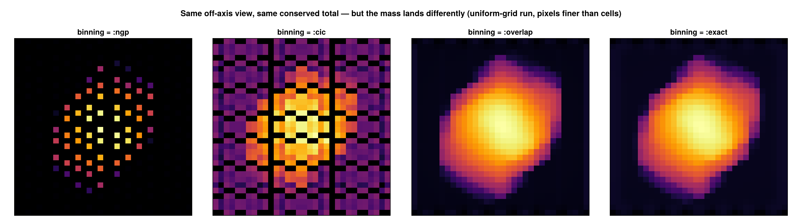
The discrepancy grows as the pixel size drops below the cell size and vanishes when pixels are larger than cells (then all coincide). This is verified quantitatively in test/35_offaxis_accuracy_tests.jl (empty-pixel fraction and L1 difference vs. resolution).
When to use which:
| Situation | Recommended binning |
|---|---|
| default — correct, AMR-aligned | :overlap (or :exact) |
| interactive exploration, quick look | :cic or :ngp (preview) |
| map resolution ≲ data resolution (pixels ≥ cells) | any — they agree |
| publication figures, pixels finer than cells (zoom-ins, coarse AMR regions) | :exact or :overlap |
| quantitative per-pixel column / optical-depth work | :exact |
Performance. :cic/:ngp cost ~one deposit per cell. :overlap costs ~n³ sub-deposits per cell, where n = ⌈cellsize/pixel⌉ is capped at nmax (default 64): it converges to :exact and is artifact-free for cells up to ~64 px, and is often faster than :exact (dense threaded supersampling vs. per-cell polygon integration). :exact costs O(covered pixels) per cell with no cap; for finest-level cells (shadow ≤ pixel) both reduce to a :cic stencil at no extra cost. All four are mass-conserving. Use :cic only for quick iteration; :exact/:overlap otherwise.
Accuracy of off-axis projection
Projecting an adaptively-refined mesh along a tilted line of sight is harder than along a box axis, and there are a few generic accuracy pitfalls worth understanding — they apply to any off-axis projector, and Mera is designed to avoid them:
Sampling vs. integration. A tilted sightline can be evaluated by sampling interpolated values at points along the ray, or by integrating each cell's actual contribution. Point sampling is fast but its error depends on the angle and on how the sample spacing compares to the cell size, and it does not in general conserve the projected total. Mera integrates the exact line-of-sight column of every cell analytically (
binning=:exact, the box-spline footprint), so the projected total is conserved to machine precision at any angle — see the Conservation Proof.Coarse-cell footprint coverage. When the map is finer than the data, a cell's projected shadow spans many pixels. Depositing only at the cell centre (
:cic/:ngp) leaves the rest of that shadow empty — the speckled "holes" you see at high resolution. The footprint modes (:overlap,:exact) fill the whole rotated shadow, so a coarse cell illuminates every pixel it actually covers.:exactis hole-free at every resolution.Pixel-vs-cell aliasing. As the pixel size drops below the cell size the centre-deposit and footprint results diverge; as it rises above the cell size they converge.
:exactremoves the aliasing by construction (it integrates the cell over the pixel rather than sampling it).Depth / slab selection. A thin line-of-sight slab (via
zrange) is selected by cell membership along the viewing direction, so a slab edge is resolved to about one cell size; the full column (nozrange) is what conserves the total exactly. Choose the full column when an exact budget matters, and a slab only when you deliberately want a thin cut.Resampling. Re-gridding AMR onto a uniform mesh before projecting is convenient but loses information at refinement boundaries and is not exactly conservative. Mera projects the native cells directly, so no intermediate resampling step is involved.
These properties are not just asserted — they are checked on real data in the test suite (test/33–test/35: exactness of the footprint, conservation across angle × pixel size × binning, and hole-free coverage). The practical upshot: use :cic for fast exploration, and :exact (or :overlap) whenever the numbers, not just the picture, need to be trusted.
Parallelization
The accurate :overlap deposit is multi-threaded: the cells are split into contiguous chunks, each accumulated into its own thread-local grid and summed at the end (a partition that keeps the result independent of the chunking, verified in test/35_offaxis_accuracy_tests.jl). To use it, start Julia with several threads and the deposit scales automatically; max_threads caps how many are used for a given call:
# start the session with N threads: julia -t 8 (or set JULIA_NUM_THREADS=8)
m = projection(gas, :sd, :Msol_pc2; inclination=60, axis=:angmom, binning=:overlap,
center=[:bc], range_unit=:kpc, pxsize=[0.3, :kpc], max_threads=8)Measured strong scaling of one pxsize=[0.3, :kpc]² off-axis :overlap projection of a galaxy:
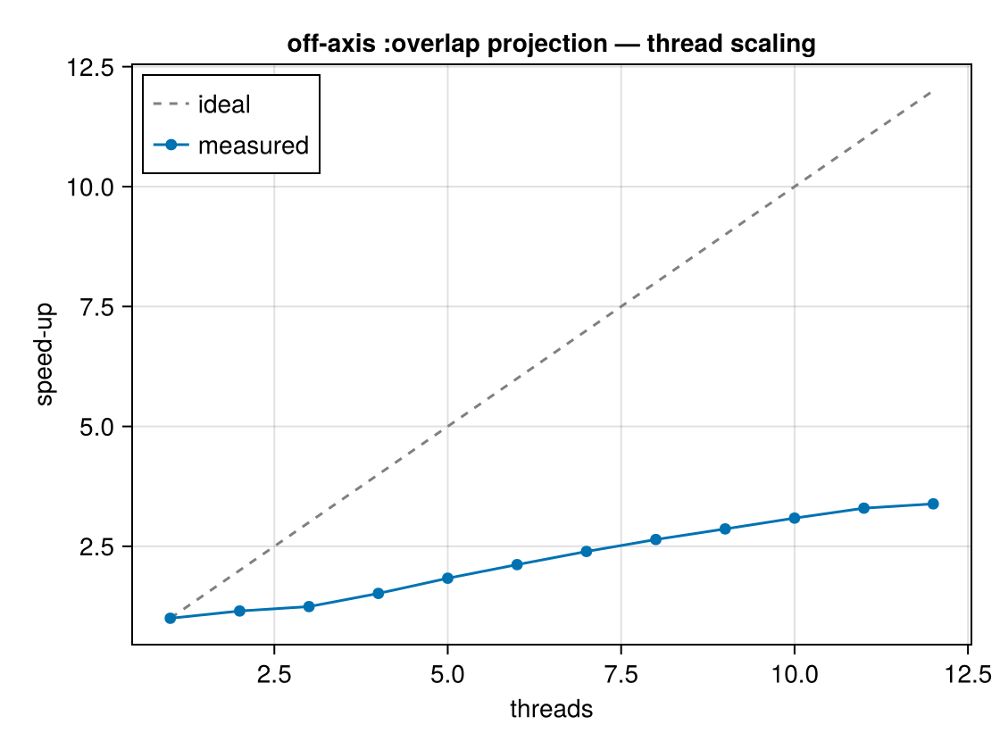
The deposit speeds up ≈1.9× / 3.0× / 4.5× on 2 / 4 / 8 threads. It does not reach the ideal linear line because the per-cell value/coordinate setup (getvar) runs serially — an Amdahl ceiling, not a deposit inefficiency. :cic/:ngp previews are already cheap and run serially. For animations (many frames) parallelism across frames/processes is the bigger lever; for a single high-resolution publication frame, :overlap with all threads is the fast path.
Particles and gravity
The same options work for particle data (stars, dark matter) and for the combined hydro+gravity interface — using the particles' own angular momentum for axis=:angmom / :faceon / :edgeon:
part = getparticles(info)
# stellar surface density, inclined from face-on (i=0°) to edge-on (i=90°), about the stars' spin
for i in (0, 45, 90)
sd_stars = projection(part, :sd, :Msol_pc2; inclination=i, axis=:angmom,
center=[:bc], range_unit=:kpc)
end
# off-axis gravitational potential on the hydro grid (combined hydro + gravity)
grav = getgravity(info)
epot = projection(gas, grav, :epot, los=[1, 1, 1], center=[:bc], range_unit=:kpc)The stellar disk of a galaxy, viewed off-axis from face-on to edge-on (spiral structure flattens into a thin disk; the sparse outskirts show individual stellar particles):
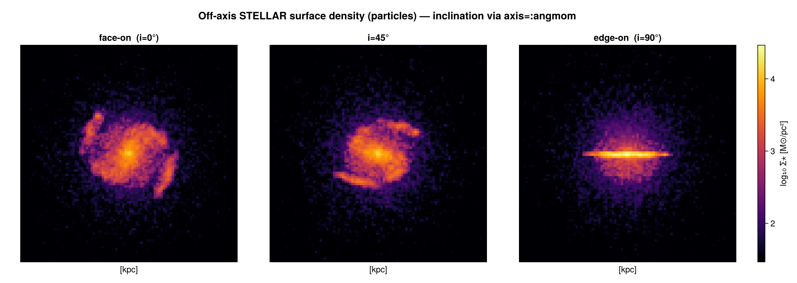
Particles are points (no cell footprint), so for particles binning=:overlap falls back to :cic.
The off-axis gravitational potential of the same galaxy (mass-weighted :epot), face-on and edge-on — the central potential well is round seen face-on and flattened along the disk edge-on:
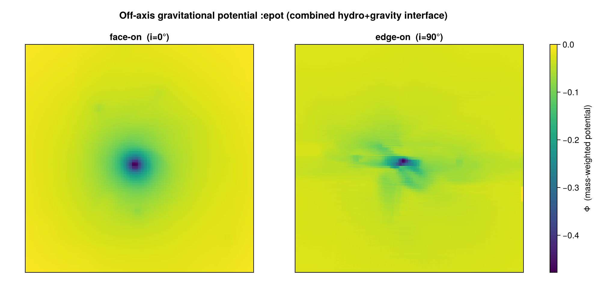
Field of view and depth
- When
xrange/yrangeare left at their defaults the camera-plane extent is the rotated bounding box of the selected cells (the whole object is visible). Settingxrange/yrangedefines a camera-plane window instead. - When
zrangeis narrowed it acts as a line-of-sight depth slab along the viewing direction; the default (full box) includes all selected cells. - The pixel size is set via
pxsize=[size, :unit](preferred) or asboxlen/res, identical to the axis-aligned path.
Camera metadata on the result
The returned AMRMapsType / PartMapsType stores the camera basis used:
m = projection(gas, :sd, los=[1, 1, 1], center=[:bc])
m.direction # :offaxis (axis-aligned maps report :unspecified)
m.los # normalized viewing direction
m.up # camera up-vector (image y-axis)
m.cam_right # camera right-vector (image x-axis)
m.center # the user's resolved center (fractional, all 3 components) — provenance, not the FOV pivotSupported variables
Off-axis views support the standard hydro/RT/gravity/particle fields, :sd and :mass, and you can request several at once — the result holds one map per variable:
m = projection(gas, [:sd, :vx, :T], [:Msol_pc2, :km_s, :K]; inclination=35, axis=:angmom, center=[:bc])
m.maps[:sd]; m.maps[:vx]; m.maps[:T] # a dictionary of 2D arrays, one per variableA single inclined projection call yields the surface density, the mass-weighted line-of-sight-axis velocity component, and the mass-weighted temperature — all sharing the same geometry:
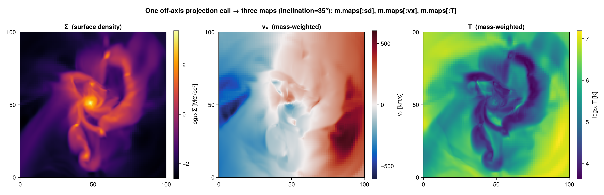
Map-only quantities whose definition is tied to the projection axis — :r_cylinder, :r_sphere, :ϕ, and the velocity dispersions :σx/:σy/:σz/:σ/:σr_cylinder/:σϕ_cylinder — require an axis-aligned direction=:x/:y/:z.
A complete example
Load → project off-axis → access the map → plot → save:
using Mera, CairoMakie
info = getinfo(100, "spiral_clumps")
gas = gethydro(info)
# face-on surface density of the disk, publication-quality binning
m = projection(gas, :sd, :Msol_pc2; direction=:faceon, binning=:overlap,
center=[:bc], range_unit=:kpc, pxsize=[0.3, :kpc])
img = log10.(replace(m.maps[:sd], 0.0 => NaN)) # the 2D map (M⊙/pc²), log-scaled
ext = m.extent .* gas.scale.kpc # physical extent of the map [kpc]
fig = Figure()
ax = Axis(fig[1,1], aspect=DataAspect(), xlabel="x' [kpc]", ylabel="y' [kpc]")
hm = heatmap!(ax, range(ext[1], ext[2], length=size(img,1)),
range(ext[3], ext[4], length=size(img,2)), img, colormap=:inferno)
Colorbar(fig[1,2], hm, label="log₁₀ Σ [M⊙/pc²]")
save("galaxy_faceon.png", fig)For the shared keywords (center, range_unit, xrange/yrange/zrange, res/pxsize, weighting, mode) see the axis-aligned hydro projection and particle projection tutorials — off-axis adds only the view-orientation keywords documented here.
Kinematics, cubes & synthetic observations
Two related families of tools, all sharing the off-axis view keywords: kinematics & cubes (line-of-sight velocity/dispersion, PV diagrams, per-pixel spectra and PPV cubes) and synthetic observations (the column integral, the emission+absorption emission_map, beam convolution, and FITS export). They are grouped together below.
Because the camera knows the viewing direction ŵ, Mera can turn an off-axis projection into the quantities an observer actually measures.
Line-of-sight velocity and dispersion — :vlos = v·ŵ (mass-weighted), and :σlos = √(⟨v²⟩−⟨v⟩²) along the same direction. Unlike the axis-tied :σx/:σy/:σz, these are defined for any line of sight:
vlos = projection(gas, :vlos, :km_s, direction=:edgeon, center=[:bc]) # rotation field
sigma = projection(gas, :σlos, :km_s, direction=:edgeon, center=[:bc]) # velocity dispersionPosition–velocity (PV) diagram — position_velocity bins the data into (in-plane offset, vlos), the standard rotation-curve / outflow diagnostic, for any line of sight:
pv = position_velocity(gas; direction=:edgeon, center=[:bc], range_unit=:kpc,
offset_unit=:kpc, v_unit=:km_s, nbins=200)
# pv.offset, pv.velocity (bin edges), pv.pv (mass in each offset–velocity bin)Mock observation — mock_observe applies a Gaussian-beam (PSF) convolution and adds white, per-pixel Gaussian noise (noise is the per-pixel standard deviation, in the map's units) — a first-order mock, not a full instrument simulation (the noise is not beam-correlated):
m = projection(gas, :sd, :Msol_pc2, direction=:faceon, center=[:bc], range_unit=:kpc, pxsize=[0.3, :kpc])
img = mock_observe(m, :sd; beam_fwhm=0.8, beam_unit=:kpc, noise=1.0) # beam (0.8 kpc) + σ=1 M⊙/pc² noiseThe four products for a stellar disk — line-of-sight velocity (rotation), dispersion, the PV diagram (note the rotation-curve ridge), and a beam+noise mock image:
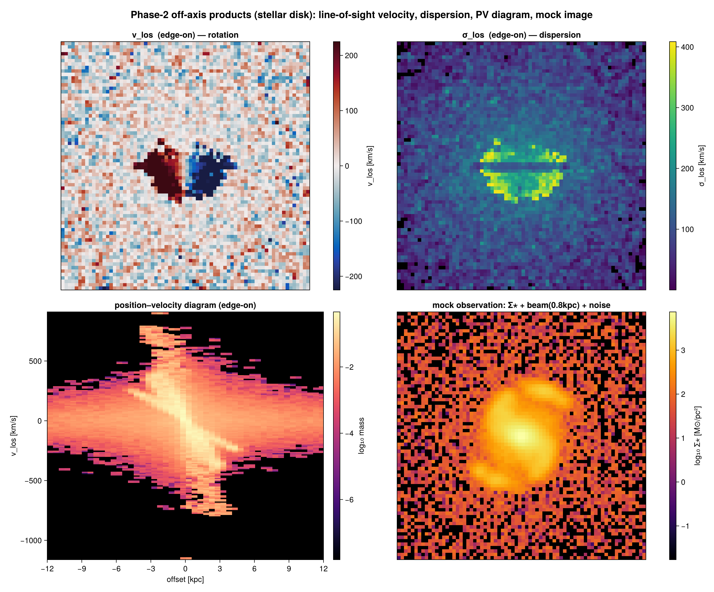
These build directly on the line-of-sight depth/velocity that the off-axis camera already computes; the deposit into the velocity/offset bins again uses the conservative CIC scheme (Hockney & Eastwood 1988), so the PV diagram conserves the total mass.
Velocity-channel cube — the full per-pixel velocity distribution
A projection gives one value per pixel (a sum or a weighted average down the sightline); :vlos and :σlos are the first two moments of the line-of-sight velocity distribution. To get the whole distribution per pixel — the spectrum / line profile — use velocity_cube, which returns a mock data-cube cube[i,j,k] = mass at sky pixel (i,j) in velocity channel k:
vc = velocity_cube(gas; direction=:edgeon, center=[:bc], range_unit=:kpc,
pxsize=[0.3, :kpc], nv=120, v_unit=:km_s)
# vc.cube[i,j,:] is the line-of-sight velocity profile of pixel (i,j)
Σ, vlos, σlos = velocity_moments(vc) # moment 0/1/2 → the Σ, vlos and σlos mapsSumming the cube over the velocity axis returns the column-mass map, and the moments reproduce the :sd, :vlos and :σlos projections — i.e. those maps are compressions of this cube. Each panel below is one velocity channel of an edge-on stellar disk: the approaching (blue-shifted) and receding (red-shifted) sides light up in different channels — the rotation resolved in velocity.
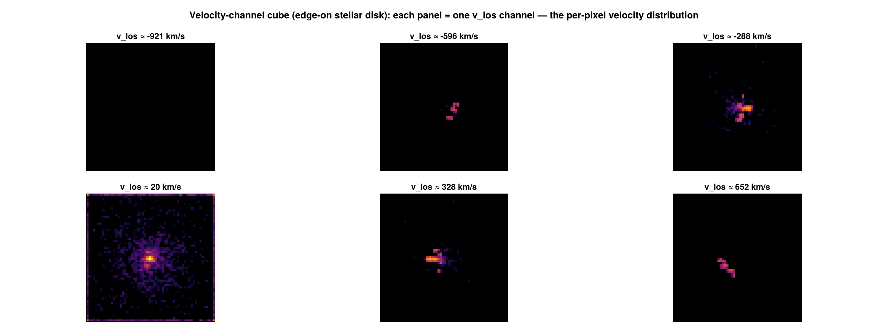
The cube is the enabling structure for mock spectral observations (HI/CO/Hα data-cubes, moment maps, channel maps, integrated spectra); position_velocity is the cube collapsed onto one spatial axis. Binning is conservative, so the cube sums to the total mass.
Any quantity along the line of sight — los_cube, los_component
velocity_cube is a shortcut for the general los_cube, which builds the per-pixel distribution of any line-of-sight quantity. The quantity keyword accepts
- a scalar field (
:T,:rho,:cs, …) → its per-sightline distribution (e.g. a temperature or density PDF per pixel — the multiphase structure along each ray), :vlos→ the velocity spectrum (whatvelocity_cubedoes), or- a 3-vector of components → its line-of-sight projection, e.g.
(:vx,:vy,:vz)(velocity),(:ax,:ay,:az)(gravitational acceleration),(:bx,:by,:bz)(magnetic field).
tcube = los_cube(gas; quantity=:T, q_unit=:K, direction=:faceon, center=[:bc], nbins=50)
Σ, meanT, dispT = los_moments(tcube) # column, mass-weighted mean & dispersion of TThe per-pixel spectrum
A cube is a spectrum per pixel. Pull one out with getspectrum — by pixel index, or by physical sky position (offset from the centre) — and plot it as a line:
vc = velocity_cube(gas; direction=:edgeon, center=[:bc], range_unit=:kpc, nv=80)
v, I = getspectrum(vc; x=2.0, y=-1.0, range_unit=:kpc) # spectrum at sky offset (2,-1) kpc
lines(v, I) # the line-of-sight velocity profile
# ∑ I over the channels equals that pixel's column (its moment-0 value)For just the 2D line-of-sight-component map of an arbitrary vector (no binning), use los_component — it returns a metadata-carrying result whose .map field is the array:
vlos = los_component(gas, (:vx,:vy,:vz); direction=:edgeon, center=[:bc], unit=:km_s)
heatmap(vlos.map) # the camera basis travels in vlos.los/.up/…
alos = los_component(gas, (:ax,:ay,:az); inclination=60, axis=:angmom, unit=:cm_s2).map # gravityTrue column integral / optical depth
column_integral gives the path-length-weighted line integral ∫ q dl (not the mass-weighted mean) — the geometric basis of a column-density or optical-depth map. With binning=:exact the chord length through each cube is integrated per pixel analytically:
Nrho = column_integral(gas, :rho; los=[1,1,1], center=[:bc], binning=:exact) # ∫ρ dl (the mass column; ≈ :sd up to code↔physical units)
# τ = κ ∫ρ dl for a grey opacity κ: tau = κ .* Nrho.map .* gas.scale.cm (dl → physical length)Emission + absorption (radiative-transfer mock image)
emission_map goes one step further than a column integral: it solves the front-to-back radiative-transfer equation I = Σ S·(1 − e^{−Δτ})·e^{−τ_front} along each sightline, using the exact box-spline chord length per cell for Δτ = κ·ℓ. Emission is attenuated by the optical depth in front of it, so it is an approximate RT mock observation rather than an optically-thin sum. Provide an absorption coefficient kappa (per code length) and a source function source (field name, constant, or per-cell vector):
em = emission_map(gas; kappa=:rho, source=:rho, inclination=60, axis=:angmom, center=[:bc])
em.map # observed intensity I ; em.tau # total optical depthA uniform slab of depth L with constant κ,S returns I = S(1 − e^{−κL}) exactly. Because the emissivity is κ·S, a small but nonzero κ gives the optically-thin limit I ≈ S·κL, while kappa=0 yields zero emission — for a κ-independent optically-thin column use column_integral. These limits are verified in test/36_offaxis_features_tests.jl.
More line-of-sight tools
moment2— the weighted line-of-sight dispersion of any field (moment2(gas, :T)), generalisingσlosbeyond velocity.integrated_spectrum— the global profile of a cube, summed over the map (integrated_spectrum(velocity_cube(gas; …))).offaxis_slice— an off-axis cutting plane (the field on the plane, not integrated through it) with the same view keywords.
Not line-of-sight specific, but often used alongside projections: profile (1D) and phase (2D weighted histograms, e.g. density–temperature) are general reductions over any field — see Profiles & Phase Diagrams.
Orbit movies
rotation_sequence renders an angle sweep with one shared field of view, so frames don't jitter (a plain per-angle projection recomputes the extent each frame):
frames = rotation_sequence(gas, :sd, :Msol_pc2; sweep=:azimuth, angles=0:10:350,
fov=20, fov_unit=:kpc, axis=:angmom, pxsize=[0.3, :kpc]) # 36 same-FOV mapsCubes are returned as a LosCubeType and can be saved/loaded (JLD2):
savecube(tcube, "myrun_Tcube") # → myrun_Tcube.jld2
tcube = loadcube("myrun_Tcube.jld2") # restores the cube, axes, units and camera metadataFor interoperability with DS9 / CASA / astropy, export a map or cube to FITS with savefits (a minimal linear WCS travels with it). This is a package extension — load FITSIO to enable it:
using FITSIO # activates the FITS extension
savefits(m, :sd, "sd_map") # an off-axis map variable → sd_map.fits
savefits(tcube, "Tcube") # a whole cube (3rd axis = the binned quantity)Troubleshooting
| Symptom | Likely cause / fix |
|---|---|
| edge-on looks face-on (or vice-versa) | L is wrong — center is not on the object; pass the object's centre so :faceon/:edgeon/axis=:angmom use the true spin |
| image looks rotated / upside-down | set the orientation with up=[..] or position_angle= |
| speckled / holey map (sparse dots) | the map out-resolves the data with :cic/:ngp; use binning=:overlap (or a coarser res) |
ArgumentError: ambiguous off-axis view | you gave two line-of-sight specifiers; keep exactly one |
error on :r_cylinder/:ϕ/:σ* | these are axis-only; use direction=:x/:y/:z |
Conventions & caveats
- Orientation (
upvsposition_angle). The camera "up" is chosen in this order: an explicitup=[..]wins; otherwiseinclination/azimuth,:faceon/:edgeonandaxis=:angmomset a sensible up-hint (the reference axis kept upright); otherwise a deterministic auto-up (the world axis least parallel to the line of sight).position_anglethen rolls the final image about the line of sight. For ordinary use preferposition_angleto rotate the frame and leaveupunset. - Orthographic only. Off-axis projection is a parallel (orthographic) projection — the observer is at infinity, all sightlines are parallel. There is no perspective/pinhole camera and no observer-in-the-box all-sky view (those are separate, planned capabilities).
column_integralis geometric.column_integralreturns the line integral∫ q dl; turning it into a real optical depth or surface brightness needs your opacity/emissivity model. For an actual emission-with-absorption solve useemission_map— an approximate radiative transfer (grey, given source function, no scattering), not a full RT code.- LOS-depth slab is a cell-centre cut. A
zrange/thickness selection keeps cells whose centre lies in the slab (it does not clip a cell straddling the slab face). The projected total is conserved to machine precision for a full column; for a thin slab the slab edge is accurate to ~one cell size. Use the full column (nozrange) when exact conservation matters. - Pixel-grid origin. The off-axis path defines its own centred pixel grid (image x =
cam_right, y =cam_up, origin at the projection centre). It agrees with the axis-aligneddirection=:x/:y/:zpath in the conserved total, but is not byte-identical pixel-for-pixel (a sub-pixel origin convention differs); within the off-axis path,:overlapand:exactshare the grid and agree per pixel.
References
The off-axis deposit builds on standard particle-mesh assignment and on the analytic projection of a box (the box-spline / X-ray transform):
- R. W. Hockney & J. W. Eastwood, Computer Simulation Using Particles, McGraw-Hill (1988) — NGP/CIC/TSC assignment and the partition-of-unity (mass-conserving) property.
- C. de Boor, K. Höllig & S. Riemenschneider, Box Splines, Applied Mathematical Sciences 98, Springer (1993) — the projection of a hypercube is a box spline (the
:exactfootprint). - L. Westover, Footprint Evaluation for Volume Rendering, SIGGRAPH (1990) — view-invariant orthographic footprints / splatting, the rendering analogue of the analytic deposit.
For comparison, established off-axis tools differ in approach: yt (Turk et al. 2011, ApJS 192, 9) ray-casts an AMR-KD-tree for off-axis views; SPLASH (Price 2007, PASA 24, 159) and other SPH tools splat analytic smoothing kernels. Among AMR tools, an analytic off-axis cell footprint (Mera's :exact) is, to our knowledge, uncommon — most resample to a uniform grid or ray-cast.